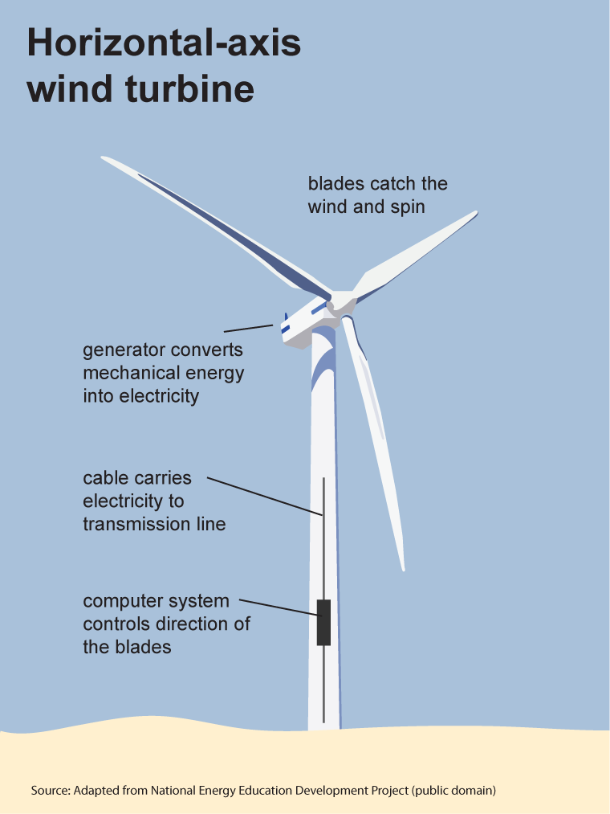

Earnings
Wind energy operations managers employed in August 2020 earned salaries that ranged from $52,550 to $143,230, averaging $115,590, according to OwlGuru. The U.S. Department of Labor reports that managers, all other, employed in May 2019 earned a median salary of $110,630. Salaries ranged from $53,380 or less to $191,340 or more.
.jpeg)
Work Environment
Wind energy operations managers work indoors and outdoors. They spend some time in offices, using computers to review and create reports and other documentation. They also spend a great deal of time outdoors, overseeing the operations of wind field equipment and systems. They work in all types of weather conditions and wind field sites can often be dusty or muddy. Operations managers wear protective clothing and gear and follow safety procedures. They usually work 40 hours per week, with more hours required when deadlines must be met or equipment needs to be fixed or upgraded. Wind fields are often located far from urban areas, requiring operation managers and other workers to travel to work sites.
The Industries
The wind energy industry is among the fastest growing sectors of the renewable-energy industry, due primarily to its lower production costs. Improvements to and innovations in wind energy technology and equipment have reduced the cost of wind-generated electricity by about 80 percent in the past 20 years; this nearly matches the cost of electricity generated by conventional sources such as coal or nuclear power. The American Wind Energy Association estimates that the U.S. wind energy industry will continue to have strong growth in the coming years. According to the association, a record 6,309 MW of additional wind capacity came online during the first nine months of 2020, pushing the nation's total number of wind turbines beyond 60,000. As the new decade began, wind turbines could be found in 41 states, and in Puerto Rico and Guam. "U.S. wind power has more than tripled over the past decade, and today is the largest source of renewable electricity in the country," the AWEA explains.
Growth
The Department of Labor does not provide information on wind energy operations managers. It does, however, predict that wind turbine service technicians will have 61 percent employment growth through 2029, which is much faster than the average for all other occupations. A growing number of wind turbines are being installed and operations managers, technicians, and other workers will be needed to operate and maintain them. However, the DOL forecasts that managers, all other, will have 2 percent employment decline through 2029. Wind energy operations is a small field and competition for jobs is expected to be keen. Employment opportunities will be best in areas such as the Great Plains, the Midwest, and along the coasts of the United States. Wind energy operations managers with relevant work experience and strong technology and interpersonal skills will have the best chances of finding work.
Postsecondary Education
Most wind energy operations managers have an associate's or bachelor's degree. Some employers may prefer to hire managers who hold a master's degree. Common degree fields for this profession are engineering, business, or related areas. Operations managers also receive training while on the job and through postsecondary technical training and apprenticeships. Many community colleges and technical schools offer certificate programs in wind turbine operations and maintenance.
Experience, Skills, and Personality Traits
Wind energy operations managers usually have four or more years of experience and prior training either while on the job, through a technical school, or an apprenticeship. Strong administration and management skills are needed to manage workers and create a cooperative, productive work environment. Knowledge of machines and tools, safety and security procedures and regulations, and various software programs are important in this job. Wind energy operations managers must have strong mechanical skills, good hand-eye coordination, good communication skills, and no fear of heights or working in confined spaces. They must be detail oriented and able to monitor the work of others, take corrective actions when needed, and be active listeners. Successful operations managers are detail oriented, have an adaptable and flexible attitude, are reliable and responsible, and have integrity.
